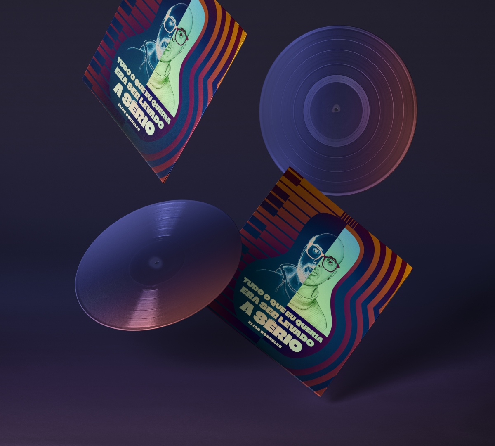

Escrevi algumas músicas ao longo dos anos, as letras estão rabiscadas em um arquivo pessoal e existem algumas gravações caseiras delas com qualidade duvidosa por aí, que compartilhei com amigos e familiares pelo WhatsApp e coisas do tipo.
Mas essa é diferente!
Essa música me veio enquanto eu escrevia uma breve autobiografia, um exercício de terapia existencial, e eu estava tentando lembrar por que é que aos 10 anos eu pedi aos meus pais para ser batizado na igreja evangélica que minha família frequentava.
Fiquei matutando nisso principalmente porque eu lembrava muito claramente de ter pensado várias vezes quando tinha em torno de 8 anos algo tipo: "quando eu crescer, não irei mais à igreja!". Esse pensamento foi uma profecia da criança que eu era, que eventualmente se realizou quando abandonei a religião no início dos meus vinte anos.
Mas então, o que me fez mudar de ideia quando tinha 10 anos? Por que eu quis ser batizado naquela época?
Um motivo do qual me lembro e que sabiamente não mencionei naquela época (embora meu irmão mais novo tenha percebido!) era que eu realmente queria experimentar o pão e o vinho servidos durante o ritual da "Santa Ceia", que eram reservados para as pessoas que já haviam sido batizadas. Cara, aqueles pães e aquele vinho tinham um cheirinho tão bom! 😄
Mas eu sabia que havia outra coisa, algo mais profundo do que isso. Então, depois de muita reflexão e de discutir o assunto com minha mãe e minha irmã que regulava de idade comigo (ela tinha 12 anos na época e se batizou algum tempo depois de mim), percebi que a principal razão era porque eu queria ser considerado mais seriamente. As pessoas diziam de quem era batizado "Fulano já participa da ceia", era como um degrau na escadinha da maturidade. Eu queria ser considerado importante assim, tão importante quanto um adulto.
Meu primeiro pensamento depois de falar com minha irmã pelo telefone foi a frase que se tornou o refrão e o título da música: « Tudo o que eu queria era ser levado a sério ! »
Eu disse isso em voz alta, senti que tinha algo musical, então sentei e escrevi os primeiros dois versos que vieram de maneira bem natural e espontânea. Legal! Gravei rapidinho com o telefone, fui dormir, acordei no dia seguinte e escrevi o verso final na mesma energia. Uau! Nunca antes escrever uma música foi tão espontâneo, nunca antes eu escrevi a partir de tanta autenticidade! Foi bem energizante!
Então decidi lançar a música no mundo, e para isso tive a chance de ser acompanhado por esses seres humanos maravilhosos que me ajudaram a tornar isso realidade:
- Mariano Telles foi responsável pela produção musical. Esse cara é incrível! Um guitarrista surpreendente, um músico talentoso e um grande compositor! Mariano: adorei trabalhar neste projeto com você, e foi bem divertido gravar no seu estúdio! Você é demais! 🎶🪄
- Giovanni Piazza, um amigo do tempo que eu morava em Floripa, um designer/empreendedor/artista, fez essa arte linda para a capa que você pode apreciar no post 🎨😻
- Pricilla Frade, uma artista maravilhosa que descobri no Instagram e que canta lindamente, me ajudou a trabalhar a voz e a expressão justa para a música e enviou muita energia positiva ✨💜
Para vocês três: muito obrigado! Vocês são incríveis! 💗
O single vai sair no dia 24 de maio de 2023!
Será lançado no dia em que farei 36 anos - sim, esse será meu presente de aniversário! 🎁
Se você usa o Spotify, pode fazer o pre-save do título aqui.
Fique ligado e aproveite a música!
